Прогноз потребительских расходов муниципалитетов и ранние сигналы сдвигов
Отчёт построен автоматически из результатов запуска municipal_20261004T140239Z. Данные: СберИндекс, безналичные расходы на жителя по 12 096 рядам (2016 МО × 6 категорий), январь 2023 – декабрь 2024. Численные утверждения ниже прочитаны из файлов результатов. Каталог обученных моделей и все метрики: docs/MODELS_AND_METRICS_RU.md.
Резюме
Исходные результаты ниже сохранены. Аудит от 07.10.2026 уточнил ретроспективный характер весов и отсутствие стандартной гарантии исходных интервалов; новые эксперименты выполнены после просмотра теста и приведены в разделе 11.
- Прогнозы 1/3/6/12 мес. Ансамбль на тесте имеет MAE 440/514/466/583 руб. против 640/719/736/1093 у Prophet, то есть на 31/28/37/47% меньше. Выбор моделей и весов заморожен до открытия теста.
- Откуда выигрыш. Основной вклад — национальные ряды с 2018 г.: у МО всего 24 месяца, поэтому сезонность и рост берутся из страны, а по МО оценивается уровень и небольшая поправка. Абляция показывает вклад в явном виде.
- Фундаментальные модели (Chronos-Bolt, Chronos-2, Chronos-2 с национальной ковариатой, TimesFM на подвыборке) без дообучения на таких коротких рядах уступают Prophet на горизонтах ≥3 (на h=1 Chronos-2 с ковариатой лучше) и получили нулевой вес в ансамбле.
- Детекторы CUSUM / Page–Hinkley / BOCPD сравнены тремя способами и на недельных реальных рядах; победитель зависит от способа разметки. Раннее предупреждение: навык не подтверждён.
- Новости как датированные официальные события (ставка ЦБ, реестр) не показали пользы относительно плацебо.
- Недельный nowcast национального уровня с поправкой смещения лучше h=1-ансамбля при ≥2 неделях месяца; без поправки он непригоден.
- Прогноз на 2025 г. по МО заморожен для будущей проверки.
1. Данные
| Источник | Что | Период | Использование |
|---|---|---|---|
СберИндекс, consumption.parquet |
безналичные расходы на жителя, руб./мес., 6 категорий | 2023-01…2024-12 | цель; 12096 полных рядов, 1044 неполных исключены |
Справочник МО (t_dict_municipal) |
регион, тип, координаты, интервалы действия | срез 2024 | статические признаки, сопоставление событий |
market_access.parquet |
индекс доступности рынков | 2024 | статический признак (log) |
| Национальные расходы СберИндекса | 5 категорий, млрд руб./мес. | 2018-12…2026-08 | приор: сезонность и рост только по данным ≤ origin |
| Недельный рост г/г (46 категорий), активность | недельные ряды | 2021/2023…2026-09 | детекторы, nowcast |
| ЦБ РФ: ключевая ставка | по дням | 2018…2026 | новостные/макро-признаки |
| Реестр событий | 7 событий со ссылками | 2023–2024 | событийная оценка детекторов |
Лицензия данных СберИндекса — CC BY-SA 4.0. Все входные данные хранятся локально в data/inputs/ и исключены из Git. make data проверяет их наличие без скачивания; список файлов — docs/INPUT_DATA_RU.md.
2. Протокол оценки
Правила организатора мне неизвестны, поэтому использован «конкурсный» протокол, описанный в открытых работах участников: validation — цели янв.–июнь 2024, test — цели июль–декабрь 2024, расширяющееся окно, прогноз горизонтов 1/3/6/12 из каждого origin с историей не менее 6 месяцев. Допущение подлежит сверке с официальными правилами.
- Для каждого origin и каждого ряда используются только значения ≤ origin; direct-метки обучения — только с целью ≤ origin (проверено тестами
tests/test_municipal.py: изменение будущих значений не меняет признаки, метки и национальные приоры). - Конфигурация структурной модели и веса ансамбля выбраны по validation;
frozen_selection.jsonзаписан до подсчёта метрик теста. В исходном запуске после первого показа теста модели, кандидаты и веса не менялись; изменения касались только расчёта Prophet для origin 12.2024 (нужен для прогноза 2025, на тест не влияет) и оформления. Значительная часть решений (дрейф без экстраполяции за обученный горизонт, сжатие 0.25) принята по validation после того, как первая версия модели провалилась на h=6. - Метрика — MAE в рублях на жителя по всей сетке (сетки у всех моделей совпадают, покрытие 100%), дополнительно R² по уровню и по изменению.
- Неопределённость — парный bootstrap по МО (1000 повторов) и по целевым месяцам (6 месяцев).
- Допущения: значение месяца origin известно на origin; актуальная версия данных (без пересмотров); validation для h=12 содержит один целевой месяц (2024-06).
3. Модели
- Baseline'ы: LastValue; SeasonalNaive (то же значение год назад, а если нет — LastValue); Prophet (месячные даты, настройки по умолчанию, годовая сезонность
autoвключается только при истории >2 лет; настройки организатора неизвестны). - Национальный путь (NatPath): прогноз = локальный уровень (среднее по последним 3 месяцам, скорректированное на реализованное национальное изменение) × национальное SeasonalGrowth-изменение от origin до цели (сезонность и темп роста из национальных рядов; соответствие муниципальных категорий национальным задано заранее).
- SeasonalNaive_NatGrowth: значение того же месяца год назад × национальный годовой рост.
- StructHGB: градиентный бустинг (MAE) по остатку относительно NatPath: признаки — локальные импульсы относительно страны, шум, сезонные разности, региональные и категорийные средние, статические признаки МО. Дрейф на месяц умножается на горизонт, но не дальше обученного (h ≤ origin−5) и сжимается на валидации (коэффициент 0.25).
- Foundation: Chronos-Bolt-small, Chronos-2 (zero-shot), Chronos-2 + национальный путь как ковариата, TimesFM-2.5 (подвыборка). Ревизии чекпойнтов в
artifacts/municipal_runs/_foundation/*_meta.json. - Ансамбль: веса минимизируют MAE на validation (линейная программа, симплекс), отдельно по горизонтам.
- Интервалы: эмпирические квантили на общей validation; стандартная conformal-гарантия не заявляется.
4. Прогноз 1/3/6/12 мес.
Результат исходного запуска. На ретроспективном тесте (цели июль–декабрь 2024, 12 096 рядов) замороженный ансамбль имеет MAE 440 / 514 / 466 / 583 руб. на жителя для горизонтов 1 / 3 / 6 / 12 мес. против 640 / 719 / 736 / 1093 у Prophet по умолчанию. Снижение — 31% / 28% / 37% / 47%. Парный bootstrap по МО (1000 повторов) даёт 95% интервалы разности MAE строго ниже нуля на всех горизонтах; bootstrap по шести целевым месяцам (общий шок месяца не усредняется по МО) также исключает ноль на всех горизонтах. R² по изменению относительно origin (динамика, а не масштаб МО): ансамбль 0.67 / 0.74 / 0.84 / 0.69, Prophet 0.13 / 0.42 / 0.53 / -0.44. Обычный R² по уровню 0.97–0.996 у всех моделей и почти ничего не показывает: уровень определяется масштабом МО.
Таблица теста
| Модель | MAE h=1 | MAE h=3 | MAE h=6 | MAE h=12 | Среднее | Δ к Prophet, % (среднее) |
|---|---|---|---|---|---|---|
| Ensemble | 439.6 | 513.9 | 466.1 | 583.4 | 500.7 | 37.2 |
| SeasonalNaive_NatGrowth | 546.7 | 542.6 | 529.0 | 612.4 | 557.7 | 30.0 |
| NatPath_K1 | 402.8 | 724.3 | 873.2 | 612.4 | 653.2 | 18.1 |
| StructHGB | 499.9 | 736.4 | 883.1 | 606.2 | 681.4 | 14.5 |
| NatPath_K3 | 525.6 | 757.9 | 757.1 | 686.5 | 681.8 | 14.5 |
| Prophet | 640.4 | 718.6 | 736.5 | 1092.8 | 797.1 | 0.0 |
| LocalOnlyHGB | 665.9 | 774.7 | 930.3 | 1165.1 | 884.0 | -10.9 |
| Chronos2_NatCov | 506.2 | 721.8 | 969.8 | 1533.3 | 932.8 | -17.0 |
| LastValue | 624.4 | 863.8 | 1124.2 | 1288.6 | 975.3 | -22.4 |
| LocalBase_K3 | 691.0 | 815.6 | 1005.7 | 1534.5 | 1011.7 | -26.9 |
| Chronos2 | 612.9 | 877.1 | 1360.7 | 1817.0 | 1166.9 | -46.4 |
| SeasonalNaive | 1288.6 | 1288.6 | 1288.6 | 1288.6 | 1288.6 | -61.7 |
| ChronosBolt | 706.7 | 1024.2 | 1603.4 | 1986.0 | 1330.1 | -66.9 |
Что даёт национальная информация (абляция)
| Вариант | MAE h=1 | MAE h=3 | MAE h=6 | MAE h=12 |
|---|---|---|---|---|
| Локальный уровень (без национальных данных) | 691.0 | 815.6 | 1005.7 | 1534.5 |
| + GBM без национальных данных | 665.9 | 774.7 | 930.3 | 1165.1 |
| Национальный путь (NatPath_K3) | 525.6 | 757.9 | 757.1 | 686.5 |
| NatPath + остаточный GBM (StructHGB) | 499.9 | 736.4 | 883.1 | 606.2 |
Национальный путь (сезонность и темп роста из рядов с 2018 г., только по данным до origin) снижает среднюю MAE с 1012 до 682 (33%). Остаточный GBM поверх национального пути даёт смешанный эффект: лучше на h=1 (526 → 500) и h=12 (687 → 606), но хуже на h=3 и h=6; в среднем 682 → 681. Основной вклад вносит национальный приор, а не нелинейная модель по МО. Причина: у МО всего 6–23 месяца истории, и ни сезонность, ни годовой рост по такому ряду оценить нельзя.
Веса ансамбля (подобраны на validation)
| Модель | 1 | 3 | 6 | 12 |
|---|---|---|---|---|
| Prophet | 0.25 | 0.47 | 0.27 | 0.28 |
| SeasonalNaive_NatGrowth | 0.35 | 0.41 | 0.66 | 0.64 |
| StructHGB | 0.40 | 0.12 | 0.06 | 0.07 |
Веса найдены линейной программой (минимум MAE на симплексе); для h=12 использованы пары h=6 и h=12, потому что на validation у h=12 один целевой месяц. Foundation-модели получили нулевой вес: на validation они не лучше выбранных кандидатов.
По категориям (среднее по 4 горизонтам)
| Категория | Ensemble | Prophet | Δ, % |
|---|---|---|---|
| Все категории | 1236.3 | 2319.8 | 46.7 |
| Здоровье | 137.6 | 201.0 | 31.5 |
| Маркетплейсы | 710.7 | 649.0 | -9.5 |
| Общественное питание | 132.7 | 225.8 | 41.2 |
| Продовольствие | 652.1 | 1138.5 | 42.7 |
| Транспорт | 135.0 | 248.3 | 45.6 |
В категории «Маркетплейсы» с очень быстрым ростом и сильной сезонностью ансамбль не лучше Prophet — это слабое место, которое стоит исправлять отдельным национальным приором для маркетплейсов.
По размеру ряда (терцили уровня внутри категории)
| Терциль | Ensemble | Prophet | Δ, % |
|---|---|---|---|
| T1 | 446.9 | 626.0 | 28.6 |
| T2 | 461.7 | 706.8 | 34.7 |
| T3 | 593.6 | 1058.6 | 43.9 |
Интервалы
| Горизонт, мес. | Номинал | Покрытие на тесте | Средняя полуширина (отн.) |
|---|---|---|---|
| 1.000 | 0.900 | 0.889 | 0.166 |
| 3.000 | 0.900 | 0.874 | 0.193 |
| 6.000 | 0.900 | 0.941 | 0.274 |
| 12.000 | 0.900 | 0.944 | 0.417 |
Исходные интервалы используют ту же validation, где выбирались веса. Стандартная гарантия split-conformal не заявляется. Отдельная последовательная калибровка проверена в дополнении от 07.10.2026.
Фундаментальные модели (zero-shot)
| Модель | MAE h=1 | MAE h=3 | MAE h=6 | MAE h=12 |
|---|---|---|---|---|
| Chronos2 | 612.9 | 877.1 | 1360.7 | 1817.0 |
| Chronos2_NatCov | 506.2 | 721.8 | 969.8 | 1533.3 |
| ChronosBolt | 706.7 | 1024.2 | 1603.4 | 1986.0 |
| Prophet | 640.4 | 718.6 | 736.5 | 1092.8 |
Chronos-Bolt-small и Chronos-2 использованы без дообучения, контекст — history[:origin+1]. Версия Chronos2_NatCov получает национальный путь как known-future ковариату. Результат: на коротких рядах (6–23 точки) zero-shot модели уступают Prophet на h≥3; на h=1 Chronos-2 и особенно Chronos-2 с ковариатой чуть лучше Prophet. Ковариата заметно улучшает Chronos-2 на всех горизонтах, но не доводит его до Prophet на h≥6. Возможное пересечение обучающих корпусов чекпойнтов с 2023–2024 гг. проверить нельзя, поэтому это оценка современной модели, а не исторического deployment.
TimesFM-2.5 (200M) на CPU считает ~0,13 с на ряд, поэтому оценён на случайной подвыборке из 200 МО (1200 рядов, все категории; seed 42), остальные модели сравнены на тех же рядах:
| Модель | 1 | 3 | 6 | 12 | среднее |
|---|---|---|---|---|---|
| Ensemble | 427.7 | 498.0 | 450.3 | 583.4 | 489.8 |
| SeasonalNaive_NatGrowth | 533.3 | 527.0 | 510.1 | 590.9 | 540.3 |
| NatPath_K3 | 506.1 | 723.2 | 720.0 | 672.2 | 655.4 |
| Prophet | 622.1 | 694.8 | 709.2 | 1077.6 | 775.9 |
| Chronos2_NatCov | 497.1 | 703.4 | 946.1 | 1494.1 | 910.2 |
| LastValue | 610.4 | 844.1 | 1094.5 | 1234.1 | 945.8 |
| TimesFM | 549.3 | 785.8 | 1245.0 | 1630.3 | 1052.6 |
| Chronos2 | 603.5 | 869.3 | 1327.6 | 1757.5 | 1139.5 |
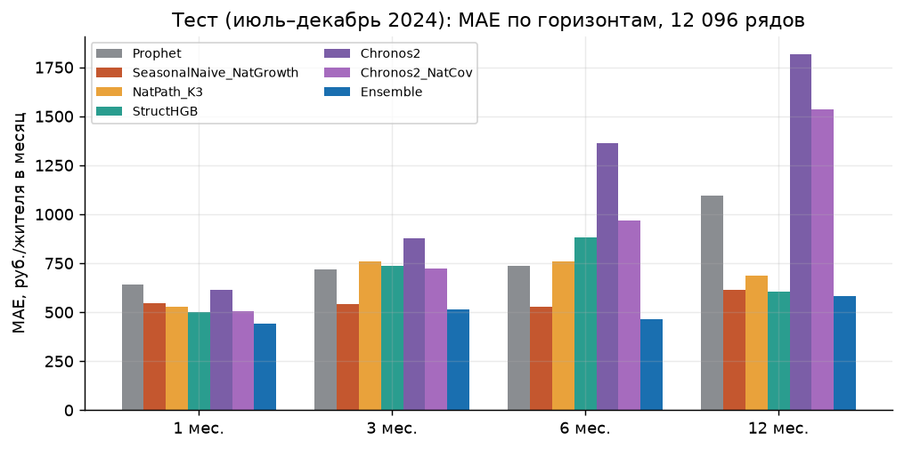
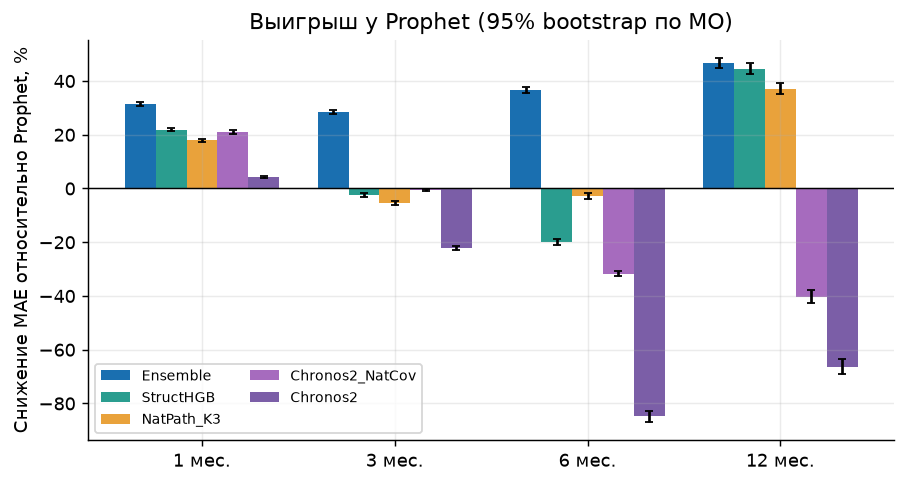
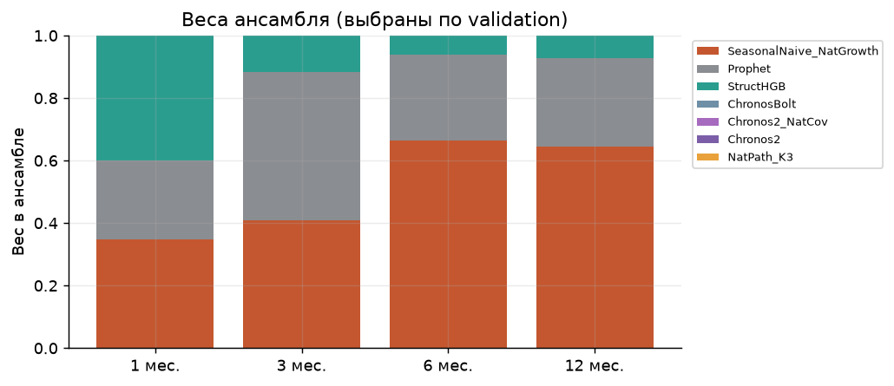
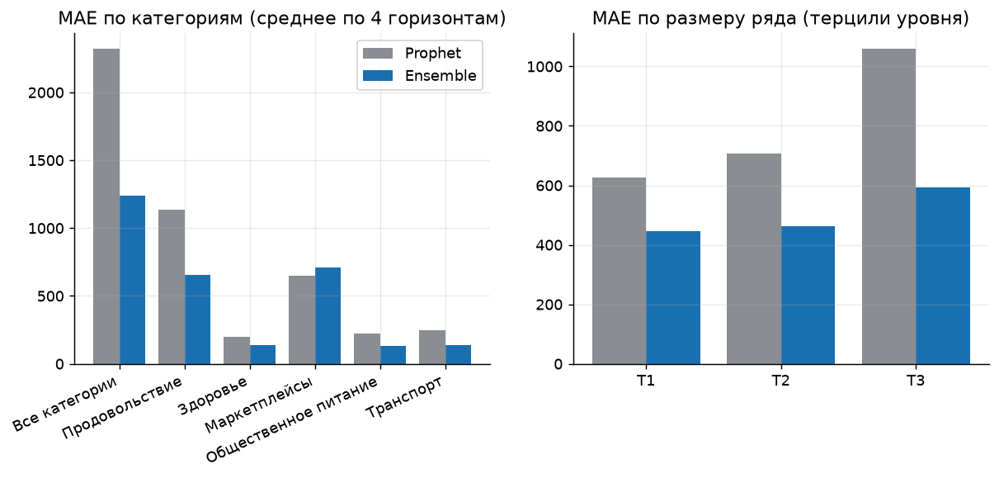
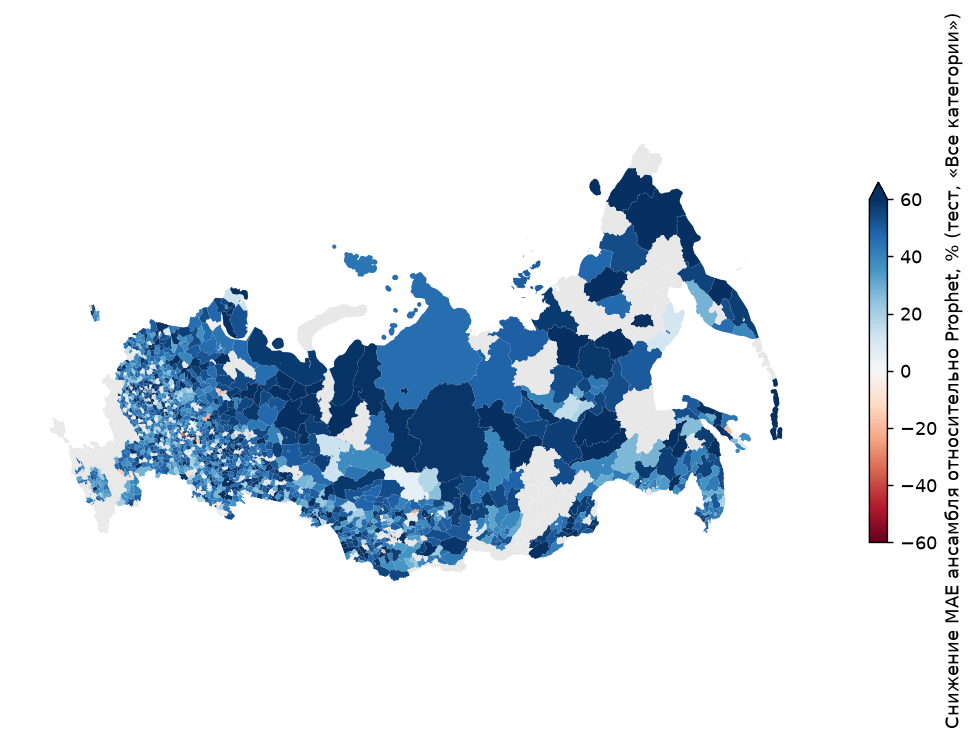
5. Структурные изменения: обнаружение и предупреждение
Детекторы CUSUM, Page–Hinkley и BOCPD подаются стандартизированными остатками прогноза h=1, выпущенного до наблюдения (национальный путь × локальный уровень). Масштаб остатка считается только по прошлому и сжимается к масштабу категории. Пороги подобраны на месяцах 10–17 при бюджете 1 ложная тревога на 100 ряд-месяцев, оценка — на месяцах 18–23. Реальных размеченных шоков по МО у нас нет, поэтому оценка идёт тремя способами диагностики, и ни один из них не называется «истиной».
A. Инъекция известных сдвигов в реальные остатки
Сдвиг ±1.5/2.5/4σ добавляется в 5% рядов (604 события) на месяцы 18–20; остальные 95% остаются реальными и служат фоном для ложных тревог. Пять независимых повторов.
| Метод | Порог | Precision | Recall | F1 | ± F1 (5 повторов) | Медиана задержки, мес. | Ложных тревог / 100 ряд-мес. |
|---|---|---|---|---|---|---|---|
| CUSUM | 10.000 | 0.161 | 0.449 | 0.237 | 0.004 | 1.400 | 1.914 |
| PageHinkley | 12.000 | 0.090 | 0.314 | 0.140 | 0.004 | 1.200 | 2.716 |
| BOCPD | 0.500 | 0.128 | 0.353 | 0.188 | 0.009 | 1.000 | 2.097 |
| Метод | Recall при сдвиге 1.5σ | Recall при сдвиге 2.5σ | Recall при сдвиге 4.0σ |
|---|---|---|---|
| CUSUM | 0.22 | 0.37 | 0.74 |
| PageHinkley | 0.15 | 0.23 | 0.54 |
| BOCPD | 0.20 | 0.34 | 0.51 |
Частота тревог на тесте выше, чем на калибровке (~2 против ≤1 на 100 ряд-месяцев): в тесте часть тревог — настоящие шоки или сезонные промахи прогноза (Дек–Янв), а не ложные. Поэтому precision здесь консервативна.
B. Реестр датированных событий
В реестре 7 событий (паводки, теракты, обстрелы; ссылки в data/inputs/event_registry.csv). Сопоставление с МО по названию внутри региона нашло 6 территорий. Белгорода, Курска и Суджи в панели нет (не прошли порог качества СберИндекса), а для Севастополя, Дербента и Махачкалы сопоставление по названию МО не нашло. Оценимы Орск, Оренбург, Новотроицк (паводок, 04.2024) и Красногорск («Крокус», 03.2024).
| event_id | pattern | method | рядов | доля_с_тревогой | макс_z | фон_все_ряды |
|---|---|---|---|---|---|---|
| EV01 | Новотроицк | BOCPD | 6 | 0.17 | 2.84 | 0.07 |
| EV01 | Новотроицк | CUSUM | 6 | 0.00 | 2.84 | 0.09 |
| EV01 | Новотроицк | PageHinkley | 6 | 0.00 | 2.84 | 0.02 |
| EV01 | Оренбург | BOCPD | 6 | 0.00 | 2.74 | 0.07 |
| EV01 | Оренбург | CUSUM | 6 | 0.00 | 2.74 | 0.09 |
| EV01 | Оренбург | PageHinkley | 6 | 0.00 | 2.74 | 0.02 |
| EV01 | Орск | BOCPD | 6 | 0.17 | 3.43 | 0.07 |
| EV01 | Орск | CUSUM | 6 | 0.00 | 3.43 | 0.09 |
| EV01 | Орск | PageHinkley | 6 | 0.00 | 3.43 | 0.02 |
| EV05 | Красногорск | BOCPD | 6 | 0.00 | 2.80 | 0.07 |
| EV05 | Красногорск | CUSUM | 6 | 0.00 | 2.80 | 0.06 |
| EV05 | Красногорск | PageHinkley | 6 | 0.00 | 2.80 | 0.01 |
Отклик на реальные события слабый: максимум |z| 2.7–3.4σ, тревоги единичны (BOCPD по 1 из 6 категорий в Орске и Новотроицке), в других случаях — нет. Это не доказывает отсутствие эффекта — месячная сумма по всем категориям сглаживает локальный шок, — но и не подтверждает работоспособность детекторов на реальных событиях.
C. Offline-сегментация как proxy-разметка
F1 по меткам offline-сегментации z-рядов (3000 случайных рядов, тест). Разметка не независима от формы z и не равна истине, поэтому это анализ чувствительности: ранжирование методов зависит от типа разметки (на инъекциях выигрывает CUSUM, на offline-метках — BOCPD).
| Штраф | BOCPD | CUSUM | PageHinkley |
|---|---|---|---|
| 2.000 | 0.608 | 0.016 | 0.220 |
| 4.000 | 0.523 | 0.019 | 0.183 |
| 8.000 | 0.359 | 0.010 | 0.209 |
D. Недельные реальные ряды (46 категорий, 151 неделя)
У недельных рядов достаточно длины для оценки на реальных данных: пороги — на первых 55% недель при бюджете 1/100, оценка — на последних 30%. Метки — offline-сегментация со штрафом 16 (чувствительность по штрафам 4/8/16/32 — в artifacts/weekly_shocks/detector_metrics_proxy_labels.csv).
| method | threshold | n_proxy_events_test | n_alarms_test | event_precision | event_recall | event_f1 | false_alarms_per_100_series_weeks | median_delay_weeks |
|---|---|---|---|---|---|---|---|---|
| CUSUM | 20.000 | 58 | 26 | 0.500 | 0.224 | 0.310 | 0.614 | 4.000 |
| PageHinkley | 24.000 | 58 | 34 | 0.529 | 0.310 | 0.391 | 0.756 | 3.000 |
| BOCPD | 0.900 | 58 | 14 | 0.357 | 0.086 | 0.139 | 0.425 | 1.000 |
E. Раннее предупреждение (вероятность сдвига в окне (t, t+k])
Признаки на момент t: z, средние и максимумы |z| за 4 недели, доля рядов с |z|>2 (ширина шока), оценки трёх детекторов, изменение ключевой ставки ЦБ за 13 недель и недели с последнего изменения. Обучение — на метках, зрелых к границе; между train и test зазор 8 недель.
| Окно, нед. | Модель | Доля событий (базовый PR-AUC) | PR-AUC | Brier | Brier константы | alarm_rate_per_100 | row_precision | row_recall |
|---|---|---|---|---|---|---|---|---|
| 4 | HGB | 0.117 | 0.162 | 0.108 | 0.103 | 9.173 | 0.202 | 0.158 |
| 4 | Logistic | 0.117 | 0.113 | 0.109 | 0.103 | 5.090 | 0.135 | 0.059 |
| 4 | BOCPD_score_only | 0.117 | 0.136 | nan | 0.103 | 4.772 | 0.133 | 0.054 |
| 13 | HGB | 0.363 | 0.389 | 0.247 | 0.232 | 11.413 | 0.357 | 0.112 |
| 13 | Logistic | 0.363 | 0.351 | 0.271 | 0.232 | 1.495 | 0.455 | 0.019 |
| 13 | BOCPD_score_only | 0.363 | 0.365 | nan | 0.232 | 4.552 | 0.373 | 0.047 |
Навык раннего предупреждения не подтверждён: PR-AUC лишь немного выше доли событий, Brier не лучше константного прогноза, а при бюджете ложных тревог recall низкий. Нужны размеченные события и ряды длиннее; сейчас честный вывод — детекторы реагируют на уже начавшийся сдвиг, предсказывать его заранее по этим признакам не получается.
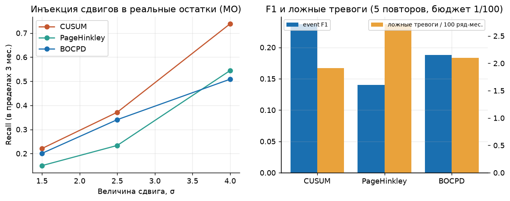
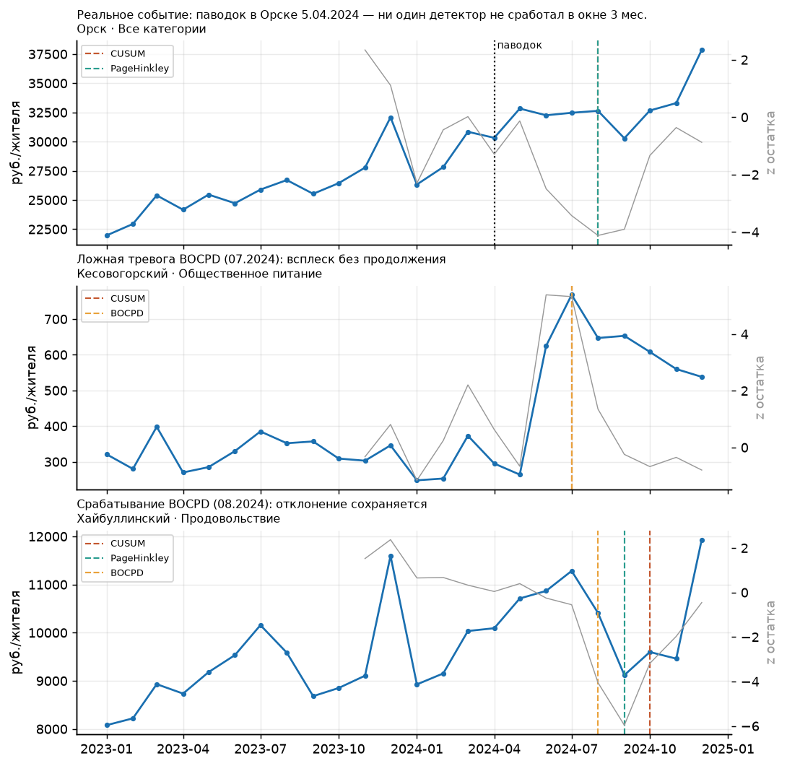
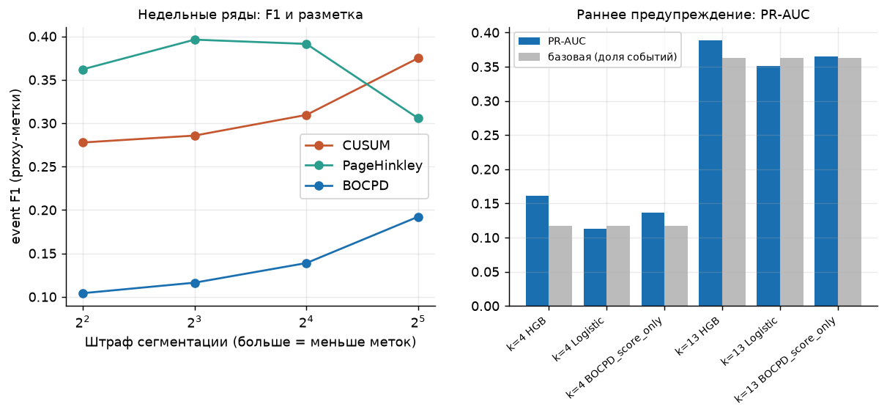
6. Новости и внешние события
«Новости» здесь — это датированные официальные события, а не текстовый корпус: решения Банка России по ключевой ставке (cbr.ru; available_at = дата вступления в силу, чтобы не заглядывать вперёд) и реестр из 7 региональных событий со ссылками. Признаки на якоре a: уровень ставки, её изменения за 3 и 6 мес., месяцев с последнего изменения, тяжесть недавних событий в МО и в регионе (окно 3 мес.). Текстовые новости (Интерфакс, Lenta, GDELT) не собирались.
Сравнение — одна быстрая конфигурация HGB на одной сетке; плацебо: реестр переносится на случайные МО и месяцы (5 повторов), ставка сдвигается назад на случайные 3–12 мес. (остаётся только прошлым).
Изменение MAE к базе без новостей, % (положительное — лучше). Тест:
| Вариант | 1 | 3 | 6 | 12 |
|---|---|---|---|---|
| база | 0.00 | 0.00 | 0.00 | 0.00 |
| плацебо: ставка + события | -0.75 | -0.40 | -0.21 | 0.20 |
| плацебо: события | -0.05 | -0.15 | 0.14 | 0.06 |
| реальные признаки (среднее 3 вариантов) | -1.01 | -1.87 | -2.50 | -0.15 |
Validation:
| Вариант | 1 | 3 | 6 | 12 |
|---|---|---|---|---|
| база | 0.00 | 0.00 | 0.00 | 0.00 |
| плацебо: ставка + события | 0.85 | -0.11 | 0.11 | 0.00 |
| плацебо: события | -0.00 | 0.07 | 0.00 | 0.00 |
| реальные признаки (среднее 3 вариантов) | 0.55 | 1.92 | 0.07 | 0.00 |
MAE по вариантам на тесте:
| Вариант | 1 | 3 | 6 | 12 |
|---|---|---|---|---|
| +key_rate | 500.8 | 743.4 | 894.2 | 601.8 |
| +key_rate+events | 500.8 | 743.4 | 902.8 | 601.9 |
| +regional_events | 493.4 | 723.1 | 866.0 | 600.5 |
| base_no_news | 493.4 | 723.1 | 866.0 | 600.5 |
| placebo_events_0 | 493.4 | 723.1 | 866.0 | 600.5 |
| placebo_events_1 | 493.4 | 723.1 | 866.0 | 600.5 |
| placebo_events_2 | 493.4 | 723.1 | 866.0 | 600.5 |
| placebo_events_3 | 494.6 | 728.3 | 859.9 | 598.8 |
| placebo_events_4 | 493.4 | 723.1 | 866.0 | 600.5 |
| placebo_rate+events_0 | 498.0 | 725.4 | 856.9 | 598.3 |
| placebo_rate+events_1 | 501.7 | 726.0 | 880.7 | 600.5 |
| placebo_rate+events_2 | 497.3 | 736.1 | 888.5 | 600.5 |
| placebo_rate+events_3 | 490.6 | 716.9 | 856.1 | 598.8 |
| placebo_rate+events_4 | 498.0 | 725.4 | 856.9 | 598.3 |
Варианты «+regional_events» и часть плацебо-событий дают побитово те же прогнозы, что база: события затрагивают единицы МО из 2016, и бустинг не делает по ним разбиений. Единственные признаки, меняющие прогноз, — ставка ЦБ и её лаги, а они лишь индекс времени в панели из 24 месяцев.
Вывод. Реальные признаки не отличаются от плацебо: полезность новостных признаков для прогноза не подтверждена. Это ожидаемо: ставка ЦБ — признак времени, а в панели всего 24 месяца, и он не может выучиться на разрезе МО; региональные события затрагивают единицы МО из 2016.
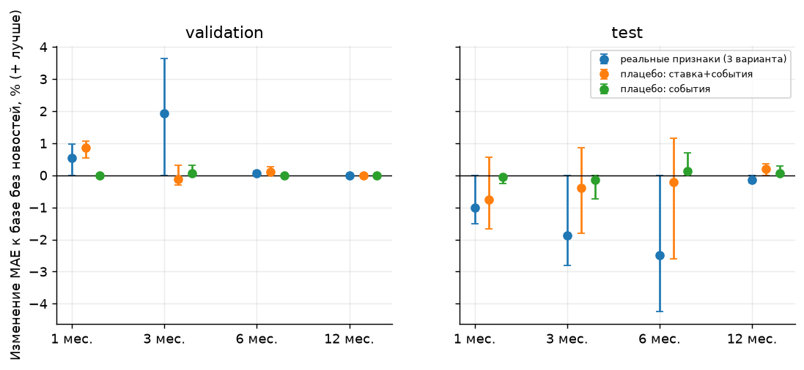
7. Недельный nowcast
Недельные ряды роста г/г идут по 27.09.2026, месячные — по 08.2026. Для целевого месяца по уже вышедшим неделям оценивается г/г и переводится в уровень: уровень = уровень_{M−12} × (1 + yoy/100). Доступность недели консервативна (период + 7 дней), поправка смещения считается только по завершённым ранее месяцам, параметры не подбирались. Национальный уровень, 12 тестовых месяцев × 5 категорий (те же, что в N01):
| Метод | n | MAE, млрд руб. |
|---|---|---|
| Nowcast(weeks=1,calibrated=False) | 60 | 136.4 |
| Nowcast(weeks=1,calibrated=True) | 60 | 72.6 |
| Nowcast(weeks=2,calibrated=False) | 60 | 137.4 |
| Nowcast(weeks=2,calibrated=True) | 60 | 68.9 |
| Nowcast(weeks=3,calibrated=False) | 60 | 130.0 |
| Nowcast(weeks=3,calibrated=True) | 60 | 65.9 |
| Nowcast(weeks=all,calibrated=False) | 60 | 124.8 |
| Nowcast(weeks=all,calibrated=True) | 60 | 62.0 |
| h=1 DevWeightedEnsemble | 60 | 70.1 |
| h=1 LastValue | 60 | 177.2 |
| h=1 SeasonalGrowth | 60 | 66.0 |
Без поправки смещения недельный nowcast плох (MAE 125–137): ряды СберИндекса по транзакциям не равны месячному набору, согласованному с Росстатом, и поправка по прошлым месяцам обязательна. С поправкой: по одной неделе месяца — хуже h=1-ансамбля и SeasonalGrowth, по двум — лучше ансамбля, по трём сравним с SeasonalGrowth, по полному месяцу — ниже обоих (62.0 против 70.1 и 66.0). Выигрыш скромный и на 60 наблюдениях; это nowcast с частичной информацией целевого месяца, а не прогноз h=1.
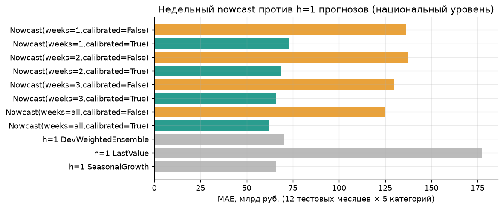
8. Ретроспективный прогноз 2025 и ожидаемая проверка
Прогноз на 12 месяцев 2025 г. построен от origin = 12.2024 и заморожен вместе с SHA256 (prospective/); фактов по МО за 2025 нет, и скрипт scripts/score_prospective.py посчитает MAE, когда они появятся.
Санити-проверка по национальным фактам 2025 г. (модель их не видела): средний по МО г/г рост прогноза против национального г/г роста, среднее модуля разницы, п.п.:
| index | Категория | ensemble | prophet | structural |
|---|---|---|---|---|
| 0 | Все категории | 2.31 | 5.48 | 2.34 |
| 1 | Общественное питание | 28.70 | 32.63 | 35.81 |
| 2 | Продовольствие | 3.50 | 8.39 | 6.43 |
Это проверка согласованности (выборка МО без весов не равна стране), а не оценка точности на уровне МО. У ансамбля подразумеваемый рост ближе к национальному, чем у Prophet, во всех трёх категориях, но для «Общественного питания» разрыв велик у обеих моделей (около 29–33 п.п.): национальный общепит в 2025 г. рос заметно быстрее, чем предполагает любая из моделей; причина (состав категории, отличие от муниципальной выборки) не исследована.
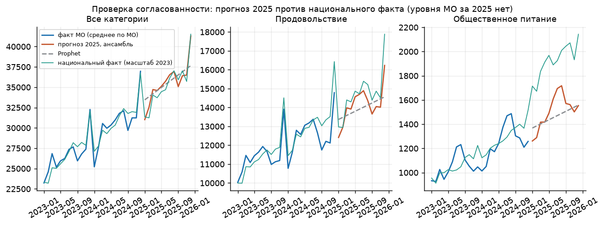
9. Ограничения
- Всего 24 месяца: сезонность по МО не оценивается, h=12 на validation проверяется один месяц; протокол валидации — допущение.
- Тест — 6 целевых месяцев; месячные интервалы поэтому широки. Общие шоки месяца (например, декабрьский пик) коррелируют по всем МО, и bootstrap по МО их не отражает.
- Модели обучались на последней версии данных; даты публикации и пересмотры неизвестны.
- Foundation-модели оценены без дообучения; TimesFM — только на подвыборке 200 МО; возможное пересечение их обучающих данных с 2023–2024 гг. проверить нельзя.
- Метки шоков по МО отсутствуют: оценка детекторов опирается на инъекцию, 4 события из реестра и proxy-разметку.
- В исходном опыте новости представлены коротким реестром и решениями ЦБ; расширенный региональный корпус проверен отдельно в дополнении.
- В панели 2 016 МО из 2 594 в справочнике (73 региона из 85): МО, не прошедшие порог качества СберИндекса, отсутствуют (например, Белгород, Курск, Краснодар); 1 044 неполных ряда исключены.
10. Воспроизведение
conda env create -f environment.yml && conda activate sber # Python 3.12
make data # локальные входы в data/inputs/, без скачивания
make municipal # Prophet, Chronos, структурная модель, ансамбль, метрики
make shocks # детекторы и недельные ряды
make report # отчёт, слайды, лендинг
11. Доработка исследования после аудита
Перенос национальной динамики на короткие муниципальные ряды
Дополнение от 07.10.2026, запуск research_20261007T073840_163667Z. Все эксперименты этого дополнения выполнены после просмотра теста 2024H2. Это анализ устойчивости и новые исследовательские результаты; они не превращают просмотренный тест в независимый. Исходные прогнозы и файлы prospective/ сохранены.
Исследовательский вопрос и вклад
Можно ли прогнозировать расходы муниципалитета с 6–24 месяцами истории, перенося сезонность и рост из длинных национальных рядов? Гипотеза: основную пользу приносит общий национальный путь, а локальная нелинейная коррекция даёт небольшую прибавку. Проверяем MAE в рублях, WAPE, медианную относительную ошибку и долю выигравших территорий на общей сетке.
Это прикладная проверка переноса информации между уровнями, а не заявка на новый алгоритм ансамблирования или conformal prediction. Общие и локальные модели обсуждаются в Montero-Manso и Hyndman. Наше отличие — явное разложение на муниципальный уровень и национальную траекторию, проверка доступности параметров и разбор короткой истории в этой панели. Полноценного обзора всех решений конкурса нет.
Сильные базы и цена усложнения
MAE на просмотренном тесте, полная панель 2 016 МО × 6 категорий:
| Модель | h=1 | h=3 | h=6 | h=12 | Среднее по h |
|---|---|---|---|---|---|
| Ensemble | 439.606 | 513.868 | 466.104 | 583.405 | 500.746 |
| DevBlend_NoHGB | 445.466 | 508.998 | 462.879 | 595.033 | 503.094 |
| EqualBlend_NoHGB | 454.374 | 541.812 | 525.439 | 628.111 | 537.434 |
| PastOnlyBlend | 454.006 | 539.040 | 576.824 | 628.111 | 549.495 |
| SeasonalNaive_NatGrowth | 546.714 | 542.560 | 528.960 | 612.419 | 557.664 |
| Prophet | 640.425 | 718.560 | 736.483 | 1092.845 | 797.078 |
| RidgeSeasonal_DevSelected | 601.014 | 713.457 | 787.697 | 969.596 | 767.941 |
| WeeklyMarketplacePrior | 480.561 | 507.459 | 509.180 | 619.345 | 529.136 |
DevBlend_NoHGB: Prophet + SeasonalNaive_NatGrowth + NatPath_K3, LAD-веса на validation. EqualBlend_NoHGB: те же три модели с фиксированными равными весами. Прибавка исходного ансамбля с HGB относительно DevBlend_NoHGB по средней MAE — 0.47%. Уникальный вклад HGB мал; дополнительная сложность пока не обоснована большим выигрышем.
NatPath_K1 имеет MAE 402.8 на h=1, ниже 439.6 у исходного ансамбля. Исходный ансамбль не является лучшим на каждом горизонте; выбирать победителя по текущему тесту для финального утверждения нельзя.
Разность MAE исходного ансамбля и сильного SeasonalNaive_NatGrowth, 95% bootstrap по шести целевым месяцам (отрицательное — лучше ансамбль):
| h | mae_difference | month_ci_low | month_ci_high |
|---|---|---|---|
| 1.000 | -107.108 | -162.146 | -38.208 |
| 3.000 | -28.693 | -93.034 | 32.860 |
| 6.000 | -62.856 | -106.250 | -18.664 |
| 12.000 | -29.015 | -83.609 | 19.080 |
На h=3 и h=12 интервалы включают ноль. Шесть месяцев недостаточны для уверенного вывода об устойчивости по времени; пространственный размер панели не добавляет независимых временных режимов. Bootstrap по месяцам здесь диагностический: временная зависимость и малое число месяцев ограничивают его интерпретацию.
Явно сезонный Prophet проверен с Fourier order=2, двумя вариантами регуляризации, выбранными по validation. Все модели сравнены на одних и тех же 25 случайных МО / 150 рядах, seed=42; выполнено 5 700 подгонок. Это ограниченное исследование чувствительности, не официальный baseline и не полный поиск параметров.
| model | 1 | 3 | 6 | 12 |
|---|---|---|---|---|
| Ensemble | 446.395 | 520.725 | 445.846 | 547.694 |
| PastOnlyBlend | 459.294 | 551.593 | 570.228 | 597.779 |
| Prophet | 674.727 | 754.886 | 732.361 | 1016.425 |
| ProphetSeasonal_DevSelected | 581.839 | 628.093 | 690.507 | 1917.265 |
| RidgeSeasonal_DevSelected | 626.596 | 743.277 | 790.271 | 995.276 |
| SeasonalNaive_NatGrowth | 510.407 | 504.155 | 495.496 | 623.672 |
Доступность параметров во времени
Исходные веса выбирались по целям до июня 2024 включительно. На h=12 прогнозы тестовых целей июля–декабря 2024 имеют origin июль–декабрь 2023: выбранные позднее веса тогда были недоступны. Это ретроспективная проверка метода, отделённая от численного as-of backtest.
PastOnlyBlend подбирает веса только по ошибкам с target ≤ origin−2; последние два зрелых месяца оставлены калибровке. При менее двух месяцев подбора используются фиксированные равные веса. Для h=12 на данном тесте нет зрелых меток: используется именно fallback, а не параметры, обученные на будущих фактах. Случайная подвыборка подбора ограничена 3 000 строками, seed=42. Модели в этом сравнении не используют статические признаки среза 2024.
Сохраняются: past_only_selection_audit.csv, calibration_audit.csv, original_selection_time_audit.csv. Ограничения: последняя версия данных, неизвестные задержки публикаций месячных значений и выбор полных рядов по всей истории. «As-of» относится к численным входам и весам при допущении доступности месяца origin; историческую доступность современного кода или винтажей оно не доказывает.
Интервалы: калибровка отделена от подбора
Последовательная калибровка использует ошибки ранее выданных прогнозов; её целевые месяцы исключены из текущего подбора весов. Из-за коррелированных территорий, короткой истории и изменения распределения гарантии обменного split-conformal не заявляются. Adaptive Conformal Inference показывает важность отдельного рассмотрения изменения распределения; адаптивный алгоритм этой статьи здесь не реализован.
Среднее эмпирическое покрытие по категориям и месяцам:
| h | availability | coverage | relative_half_width |
|---|---|---|---|
| 1.000 | 1.000 | 0.859 | 0.159 |
| 3.000 | 1.000 | 0.867 | 0.244 |
| 6.000 | 1.000 | 0.927 | 0.304 |
| 12.000 | 0.000 | nan | nan |
На h=1 и h=3 есть недопокрытие относительно 90%. На h=12 интервал недоступен: нулевую доступность нельзя заменять высоким покрытием. Полный разрез по категориям и месяцам — past_only_intervals.csv.
Исходные интервалы были рассчитаны по той же validation, где выбирались веса. Их старые значения сохранены как эмпирическая диагностика; стандартная гарантия split-conformal к ним неприменима.
Внешние данные: маркетплейсы и инфляция
В имеющейся выгрузке найден недельный рост расходов на маркетплейсах с 12.11.2023. Новый prior использует медиану доступных недель последних 13 недель (минимум 4) и расход МО того же месяца год назад. Доступность недели = период + 7 дней; неизвестный или недоступный prior заменяется SeasonalNaive_NatGrowth. Чужая будущая неделя не используется. Для остальных категорий прогноз базы не меняется.
MAE только по маркетплейсам, одна сетка:
| Модель | 1 | 3 | 6 | 12 |
|---|---|---|---|---|
| Ensemble | 521.442 | 575.929 | 661.425 | 1083.842 |
| PastOnlyBlend | 561.048 | 569.589 | 541.311 | 1131.560 |
| WeeklyMarketplacePrior | 617.427 | 747.900 | 845.292 | 1357.207 |
| SeasonalNaive_NatGrowth | 1014.348 | 958.511 | 963.972 | 1315.653 |
Источник категории «Непродовольственные товары» слишком широк для маркетплейсов; недельная категория совпадает по названию, но равенство транзакционного охвата не подтверждено. Улучшение относительно прежнего сезонного правила есть на h=1/3/6, на h=12 его нет; замена всего исходного ансамбля этим правилом не обоснована. Такой prior теперь можно проверять на следующем независимом периоде.
Для интерпретации добавлен национальный ИПЦ декабря 2024 к декабрю 2023 из Росстата, опубликованный 15.01.2025. Он не подаётся в исторические прогнозы 2024 года.
| category | price_group | nominal_yoy_mean_pct | deflated_proxy_yoy_mean_pct | cpi_yoy_pct |
|---|---|---|---|---|
| Все категории | Все товары и услуги | 14.353 | 4.413 | 9.520 |
| Продовольствие | Продовольственные товары | 5.958 | -4.585 | 11.050 |
Дефлированный показатель — диагностический proxy. Он не отделяет объём потребления от изменений структуры корзины, охвата платежей и состава клиентов. Для общепита, здоровья и маркетплейсов соответствующий точный дефлятор не найден; широкие индексы не подставляются как эквивалент.
Экономическая интерпретация и устойчивость
Средний г/г рост по месяцам 2024: национальный proxy и муниципальная панель отличаются; соответствие категорий является допущением.
| category | mean_local_yoy_pct | median_local_yoy_pct | national_proxy_yoy_pct |
|---|---|---|---|
| Все категории | 14.867 | 14.928 | 16.088 |
| Здоровье | 10.227 | 10.702 | 17.328 |
| Маркетплейсы | 64.686 | 56.594 | 17.328 |
| Общественное питание | 19.925 | 17.378 | 23.131 |
| Продовольствие | 10.126 | 10.695 | 14.773 |
| Транспорт | 8.598 | 9.157 | 14.952 |
Прогноз 2025: чувствительность к агрегированию (среднее по 12 месяцам):
| category | mean_mo_yoy_pct | ratio_of_sums_yoy_pct | national_actual_yoy_pct |
|---|---|---|---|
| Все категории | 16.026 | 16.166 | 14.153 |
| Общественное питание | 20.753 | 20.349 | 49.456 |
| Продовольствие | 12.490 | 12.581 | 12.343 |
По общепиту переход от среднего роста МО к отношению сумм почти не устраняет разрыв с национальным фактом. Различие весов этих двух способов не объясняет расхождение. Причина остаётся неустановленной: нужны проверка определений категорий, охвата и возможных изменений измерения. Отношение сумм расходов на жителя не является суммой денежных расходов страны: для неё нужны веса населения.
Доля МО с улучшением против сильной сезонной базы:
| model | comparator | h | municipal_win_share |
|---|---|---|---|
| Ensemble | SeasonalNaive_NatGrowth | 1 | 0.804 |
| Ensemble | SeasonalNaive_NatGrowth | 3 | 0.569 |
| Ensemble | SeasonalNaive_NatGrowth | 6 | 0.833 |
| Ensemble | SeasonalNaive_NatGrowth | 12 | 0.603 |
| PastOnlyBlend | SeasonalNaive_NatGrowth | 1 | 0.760 |
| PastOnlyBlend | SeasonalNaive_NatGrowth | 3 | 0.519 |
| PastOnlyBlend | SeasonalNaive_NatGrowth | 6 | 0.322 |
| PastOnlyBlend | SeasonalNaive_NatGrowth | 12 | 0.481 |
Категории: MAE, WAPE и медианная относительная ошибка; значения усреднены по месяцам и горизонтам:
| model | value | mae | wape | median_ape |
|---|---|---|---|---|
| Ensemble | Все категории | 1236.331 | 0.039 | 0.033 |
| Ensemble | Здоровье | 137.634 | 0.093 | 0.085 |
| Ensemble | Маркетплейсы | 710.659 | 0.132 | 0.124 |
| Ensemble | Общественное питание | 132.715 | 0.099 | 0.104 |
| Ensemble | Продовольствие | 652.107 | 0.052 | 0.046 |
| Ensemble | Транспорт | 135.029 | 0.071 | 0.061 |
| PastOnlyBlend | Все категории | 1399.182 | 0.044 | 0.038 |
| PastOnlyBlend | Здоровье | 165.339 | 0.112 | 0.106 |
| PastOnlyBlend | Маркетплейсы | 700.877 | 0.129 | 0.121 |
| PastOnlyBlend | Общественное питание | 153.981 | 0.114 | 0.119 |
| PastOnlyBlend | Продовольствие | 726.011 | 0.058 | 0.053 |
| PastOnlyBlend | Транспорт | 151.581 | 0.080 | 0.070 |
Десять регионов с наибольшим средним WAPE исходного ансамбля:
| value | mae | wape | median_ape |
|---|---|---|---|
| Республика Калмыкия | 564.178 | 0.088 | 0.116 |
| Республика Саха (Якутия) | 945.527 | 0.082 | 0.095 |
| Сахалинская область | 933.798 | 0.081 | 0.105 |
| Чукотский автономный округ | 1610.064 | 0.081 | 0.105 |
| Амурская область | 690.194 | 0.079 | 0.096 |
| Республика Тыва | 591.815 | 0.079 | 0.092 |
| Ненецкий автономный округ | 1014.389 | 0.078 | 0.077 |
| Магаданская область | 1160.715 | 0.077 | 0.089 |
| Ямало-Ненецкий автономный округ | 975.719 | 0.071 | 0.090 |
| Республика Марий Эл | 450.369 | 0.070 | 0.085 |
Результаты относятся к полной наблюдаемой когорте, а не ко всем МО России. В «Все категории» входят расходы подкатегорий; средняя метрика по шести категориям не является суммой экономической полезности. Итоговые веса категорий следует согласовать с регламентом.
Официальные события и действие после тревоги
Добавлены три кейса с подтверждающими официальными публикациями. Дата события, дата публикации и дата проверки сохранены отдельно. Это внешние события, не независимые подтверждённые метки сдвига расходов.
| event_id | title | matched_territories | evaluable | period_role | reason |
|---|---|---|---|---|---|
| VC01 | Эвакуация жителей Орска после повреждения дамбы | 1 | True | calibration | available |
| VC02 | Пожар и нападение в Крокус Сити Холле | 1 | True | calibration | available |
| VC03 | Паводок в Уссурийске | 1 | False | outside_calibration | no_matched_rows_or_insufficient_history |
| event_id | method | series | detected_share | median_delay |
|---|---|---|---|---|
| VC01 | AbsZ | 6 | 0.000 | nan |
| VC01 | BOCPD | 6 | 0.167 | 3.000 |
| VC01 | CUSUM | 6 | 0.000 | nan |
| VC01 | PageHinkley | 6 | 0.000 | nan |
| VC02 | AbsZ | 6 | 0.000 | nan |
| VC02 | BOCPD | 6 | 0.000 | nan |
| VC02 | CUSUM | 6 | 0.000 | nan |
| VC02 | PageHinkley | 6 | 0.000 | nan |
Два оценимых события относятся к периоду настройки порогов: это описательные кейсы, а не независимый событийный тест. Уссурийск сопоставлен, но история для стандартизации слишком коротка. BOCPD реагирует на одну из шести категорий Орска; реакция остальных методов и на Красногорск слабая. Отсутствие тревоги не доказывает отсутствие экономического воздействия.
Добавлена база AbsZ: порог абсолютного стандартизованного остатка, подобранный по той же калибровке при бюджете 1 тревога на 100 ряд-месяцев; cooldown=3 месяца. Тревоги без события в коротком реестре сохранены в unmatched_alarms.csv; достоверно назвать их ложными нельзя.
Проверена связка «тревога → коррекция будущего прогноза». После сигнала используем только доступный остаток, сжатие 0.5, ограничение log-коррекции ±0.3 и затухание за 3 месяца. Параметры заданы для этого исследовательского опыта, по тесту не оптимизировались. Разность MAE относительно неизменённого NatPath_K3 (отрицательное — лучше):
| method | 1 | 3 | 6 | 12 |
|---|---|---|---|---|
| AbsZ | -0.553 | -0.696 | 3.683 | -0.884 |
| BOCPD | -11.453 | -7.820 | 0.363 | 0.000 |
| CUSUM | -2.826 | 4.705 | 5.372 | 0.000 |
| PageHinkley | -7.708 | -3.424 | 0.030 | 0.000 |
Эффект небольшой и зависит от горизонта; раннее предупреждение будущего события этим не доказано. Действие начинается после наблюдения сигнала. Сравнение не заменяет существующую оценку детекторов на инъекциях и недельных proxy-метках.
Сценарий использования
Пользователь — региональный аналитик спроса. Он выбирает МО и категорию, смотрит прогноз расходов и диапазон неопределённости, сопоставляет отклонение с общим национальным ростом. При тревоге проверяет качество данных и официальные события; решение о коррекции принимает после проверки. Возможный результат — приоритет территории для ручного анализа. Экономия бюджета или эффект для бизнеса не измерены и не заявляются.
Демонстрация: presentation/research_demo.html, без сервера и внешних библиотек. Три реальных кейса показывают факт, прогноз до наблюдения и тревоги; отдельная таблица показывает замороженный ретроспективный прогноз 2025, фактов МО за этот год нет.
Воспроизводимость и границы готовности
Полный снимок среды в requirements.lock.txt; environment.yml теперь использует его. HiGHS и BLAS ограничены одним потоком; команды Make используют пониженный приоритет. Исходный запуск воспроизведён по сохранённым прогнозам. make verify проверяет версии пакетов, SHA256 входов, доступность недельных данных, зрелость/разделение меток, сохранность файлов prospective/ и совпадение исходных метрик.
conda env create -f environment.yml
conda activate sber
make test
make research-prophet # 1 worker; совместимый кэш используется повторно
make research
make verify
make report
Перед research нужны исходные данные и прогнозы source_run. Полное воспроизведение с нуля: make all, затем команды выше; оно существенно дороже лёгкого повторного анализа. Установка зависимостей в новой среде с нуля и независимая внешняя временная отметка пока не подтверждены. Просмотренный тест не используется для заявления нового независимого выигрыша.
Критерии и веса подтверждены пользователем 07.10.2026. Точный baseline и правила валидации ещё не предоставлены; подробной шкалы качества внутри критериев нет. Итоговое сопоставление — docs/CRITERIA_AUDIT_RU.md; баллы жюри и численный шанс на приз не оцениваются.
Влияние региональных новостей на прогнозы и детекторы
Пилот: Оренбургская область, 39 МО, 234 ряда, 24 месяца (2023–2024). Корпус — 28900 заголовков, 2 источника; публикации найдены в 24 из 24 месяцев. Запуск: artifacts/regional_news_runs/news_20261007T171936_092637Z. Расчёт занял 24.7 секунды, один вычислительный поток; обучение фундаментальных моделей не повторялось.
Вывод: Новостной вариант снижает MAE относительно without_news на горизонтах 1, 3, 12; повышает на 6. Сохранённый ансамбль точнее with_news на всех горизонтах. Результат исследовательский; детекторные сравнения чувствительны к финансовой proxy-разметке.
| source | Публикаций |
|---|---|
| ГУ МЧС России по Оренбургской области | 53 |
| Оренбург Медиа | 28847 |
Протокол
Конфигурация — configs/news_impact.json. Обучение прогнозов: расширяющееся окно, метки только до origin включительно. Валидация — цели 01–06.2024, тест — 07–12.2024; горизонты 1/3/6/12. Ridge alpha=1000, shrink=0.25 и ограничение коррекции ±0.3 log заданы одинаково для вариантов до запуска. Категории кодируются индикаторами; заполнение пропусков и масштабирование обучаются только на прошлых строках. Будущий горизонт не усиливает дрейф дальше максимального обученного горизонта.
Прогнозная база — национальный сезонный путь NatPath_K3; Ridge оценивает муниципальное отклонение. Сравниваются одинаковые модели: without_news, coverage_only (объём по источникам), with_news (все признаки), delayed_news_3m (задержка на 3 месяца), mchs_only (исходный корпус), crisis_only (ЧС из расширенного корпуса), economic_only (экономические темы). Последние два варианта сохраняют одинаковые признаки покрытия, изолируя темы. Задержанный контроль не использует будущие публикации раньше оригинала; он не является доказательством причинности.
Новостные признаки: log(1+количество) за последние 1 и 3 календарных месяца, по источникам, десяти темам и известному МО. Четыре темы ЧС дополнены ценами, доходами/работой, выплатами, торговлей/услугами, предприятиями, транспортом/жильём. Пять признаков направления: рост/снижение цен, рост доходов, открытие/закрытие бизнеса. Всего 58 признаков; имена — news_feature_schema.json. Правила фиксированы без подбора по тесту. Материалы с неподтверждённой географией не создают тематический сигнал. При известном МО событие не переносится на все МО области. Заголовок может иметь несколько тем; упоминание суммы не превращается в финансовый показатель.
Для детекторов используется сохранённый финансовый стандартизованный остаток z, рассчитанный по прошлой истории. Новостной вариант усиливает z в 1.5 раза только в месяц доступной тематической публикации соответствующей географии; нулевой финансовый остаток не превращается в тревогу. Пороги каждого варианта выбираются только на калибровке 11.2023–06.2024 при одном максимальном бюджете 1 тревога на 100 ряд-месяцев. Это бюджет общего количества тревог, а не доказанных ложных тревог. Реализованный бюджет может различаться из-за дискретной сетки. Тестовые частоты не обязаны соблюдать калибровочный бюджет.
Насыщение новостного входа
| variant | mean_fraction_series_with_signal | months_same_as_coverage |
|---|---|---|
| coverage_only | 1.000 | 6 |
| crisis_only | 1.000 | 6 |
| delayed_news_3m | 1.000 | 6 |
| economic_only | 1.000 | 6 |
| mchs_only | 0.004 | 0 |
| with_news | 1.000 | 6 |
| without_news | 0.000 | 0 |
При большом корпусе правило «есть хотя бы одна тематическая новость» может включаться во всех ряд-месяцах. Тогда новостной вариант лишь постоянно масштабирует финансовый остаток; изменение тревог объясняется масштабом и дискретной сеткой порогов. Совпадение с coverage_only означает, что дополнительная польза содержания новостей для детектора не показана. Следующий содержательный вариант должен проверять локальную интенсивность или новизну тем на новых данных; правило после просмотра теста здесь не подбиралось.
Прогнозы: основной контроль
Меньшая MAE лучше. Изменение положительное означает ухудшение.
| Горизонт, мес | MAE без новостей | MAE с новостями | Изменение MAE, % |
|---|---|---|---|
| 1.000 | 394.555 | 380.665 | -3.520 |
| 3.000 | 573.485 | 545.454 | -4.888 |
| 6.000 | 555.054 | 731.825 | 31.848 |
| 12.000 | 755.427 | 740.189 | -2.017 |
Валидационные MAE:
| model | 1 | 3 | 6 | 12 |
|---|---|---|---|---|
| NatPath_K3 | 358.540 | 524.403 | 739.684 | 677.480 |
| coverage_only | 367.454 | 436.039 | 836.198 | 677.480 |
| crisis_only | 340.679 | 429.548 | 744.357 | 677.480 |
| delayed_news_3m | 332.770 | 345.747 | 720.716 | 677.480 |
| economic_only | 349.545 | 401.819 | 748.919 | 677.480 |
| mchs_only | 340.036 | 349.436 | 801.735 | 677.480 |
| with_news | 347.913 | 407.696 | 753.600 | 677.480 |
| without_news | 348.193 | 336.700 | 764.989 | 677.480 |
Выбор между without_news и with_news по валидации допускает новости на h=1,6; при равенстве выбирает without_news. Это исследовательский выбор внутри пилота, а не новая глобальная модель проекта.
| h | selected_on_validation | validation_mae_without_news | validation_mae_with_news | test_mae_selected |
|---|---|---|---|---|
| 1 | with_news | 348.193 | 347.913 | 380.665 |
| 3 | without_news | 336.700 | 407.696 | 573.485 |
| 6 | with_news | 764.989 | 753.600 | 731.825 |
| 12 | without_news | 677.480 | 677.480 | 755.427 |
Bootstrap по шести целевым месяцам, delta=MAE варианта − MAE без новостей:
| variant | h | delta_mae_vs_without_news | month_ci_low | month_ci_high | municipality_ci_low | municipality_ci_high | target_months |
|---|---|---|---|---|---|---|---|
| with_news | 1 | -13.890 | -25.082 | -2.758 | -17.025 | -10.550 | 6 |
| with_news | 3 | -28.032 | -85.514 | 24.344 | -37.697 | -18.987 | 6 |
| with_news | 6 | 176.771 | -0.460 | 356.405 | 157.977 | 197.515 | 6 |
| with_news | 12 | -15.238 | -96.736 | 64.117 | -28.701 | -5.708 | 6 |
Месячный интервал разности news−coverage целиком ниже нуля на h=1. Сравнения множественные и исследовательские. Узкие интервалы по МО не устраняют зависимость от общих региональных месяцев; шестимесячный тест не подтверждает устойчивость эффекта.
| h | delta_mae_news_vs_coverage_only | month_ci_low | month_ci_high |
|---|---|---|---|
| 1.000 | -12.466 | -22.805 | -2.325 |
| 3.000 | -31.763 | -99.907 | 27.439 |
| 6.000 | 116.572 | 9.876 | 253.543 |
| 12.000 | 84.490 | 22.628 | 165.432 |
Все новые варианты и сохранённые ориентиры на тех же рядах:
| model | 1 | 3 | 6 | 12 |
|---|---|---|---|---|
| CachedEnsemble | 367.332 | 425.870 | 424.662 | 511.778 |
| CachedProphet | 466.109 | 527.422 | 533.743 | 781.341 |
| NatPath_K3 | 396.493 | 619.356 | 661.799 | 584.683 |
| coverage_only | 393.131 | 577.217 | 615.254 | 655.699 |
| crisis_only | 376.935 | 533.075 | 856.565 | 765.625 |
| delayed_news_3m | 375.862 | 559.070 | 601.959 | 797.093 |
| economic_only | 379.265 | 554.430 | 665.790 | 704.811 |
| mchs_only | 386.594 | 558.411 | 583.609 | 798.802 |
| with_news | 380.665 | 545.454 | 731.825 | 740.189 |
| without_news | 394.555 | 573.485 | 555.054 | 755.427 |
CachedEnsemble/CachedProphet — ранее сохранённые прогнозы, они не переобучались и не являются парной абляцией архитектуры Ridge. Их ретроспективные ограничения описаны в основном аудите. Сохранённый ансамбль точнее with_news на всех горизонтах.
Какие признаки использовала модель
| feature | mean_abs_coefficient | mean_signed_coefficient |
|---|---|---|
| log_local_fire_3m | 0.002 | 0.002 |
| log_relevant_transport_housing_3m | 0.002 | -0.002 |
| log_relevant_weather_1m | 0.002 | -0.002 |
| log_business_closure_1m | 0.002 | 0.002 |
| log_relevant_business_industry_3m | 0.002 | -0.002 |
| log_local_infrastructure_3m | 0.002 | 0.002 |
| log_relevant_flood_or_evacuation_1m | 0.002 | 0.001 |
| log_local_retail_services_3m | 0.002 | 0.002 |
| log_relevant_payments_support_1m | 0.002 | -0.001 |
| log_relevant_fire_3m | 0.002 | -0.002 |
| log_local_payments_support_3m | 0.002 | 0.002 |
| log_relevant_business_industry_1m | 0.002 | 0.002 |
Средние коэффициенты Ridge после стандартизации на origin≤17, до тестового периода. Это диагностика модели, не причинный эффект: темы коррелируют между собой и со временем.
Детекторы
Независимая от новостей ориентировочная разметка: DP-сегментация финансового z, минимальная длина сегмента 4, минимальный сдвиг 1.5σ. Проверены штрафы 2/4/8·log(T). Сами эти метки используют весь ряд и не являются доказанными реальными шоками. Новости не используются для формирования эталона. Совпадения считаются один-к-одному, задержка до 3 месяцев, только события и тревоги тестового периода.
Основной срез штрафа 4:
| method | variant | n_proxy_events | n_alarms | matched_proxy_events | proxy_precision | proxy_recall | proxy_f1 | median_delay_months |
|---|---|---|---|---|---|---|---|---|
| CUSUM | without_news | 14 | 19 | 0 | 0.000 | 0.000 | 0.000 | nan |
| PageHinkley | without_news | 14 | 47 | 1 | 0.021 | 0.071 | 0.033 | 1.000 |
| BOCPD | without_news | 14 | 5 | 2 | 0.400 | 0.143 | 0.211 | 1.000 |
| CUSUM | with_news | 14 | 13 | 1 | 0.077 | 0.071 | 0.074 | 2.000 |
| PageHinkley | with_news | 14 | 57 | 3 | 0.053 | 0.214 | 0.085 | 2.000 |
| BOCPD | with_news | 14 | 19 | 4 | 0.211 | 0.286 | 0.242 | 1.500 |
Уменьшение числа тревог само по себе не доказывает рост качества. Оценивать нужно precision, recall и чувствительность к варианту разметки совместно.
Чувствительность F1 к штрафу разметки:
| method | proxy_penalty | n_proxy_events | with_news | without_news |
|---|---|---|---|---|
| BOCPD | 2 | 32 | 0.314 | 0.162 |
| BOCPD | 4 | 14 | 0.242 | 0.211 |
| BOCPD | 8 | 3 | 0.182 | 0.500 |
| CUSUM | 2 | 32 | 0.044 | 0.000 |
| CUSUM | 4 | 14 | 0.074 | 0.000 |
| CUSUM | 8 | 3 | 0.000 | 0.000 |
| PageHinkley | 2 | 32 | 0.135 | 0.101 |
| PageHinkley | 4 | 14 | 0.085 | 0.033 |
| PageHinkley | 8 | 3 | 0.067 | 0.040 |
Полная таблица всех тематических контролей и методов сохранена в detector_metrics.csv. Универсального победителя по одному выбранному штрафу не устанавливаем.
Выбранные пороги и фактические частоты:
| variant | method | threshold | calibration_alarm_rate_per_100 | test_alarm_rate_per_100 | test_alarms |
|---|---|---|---|---|---|
| without_news | CUSUM | 12.000 | 0.588 | 1.353 | 19 |
| without_news | PageHinkley | 12.000 | 0.214 | 3.348 | 47 |
| without_news | BOCPD | 0.700 | 0.160 | 0.356 | 5 |
| coverage_only | CUSUM | 24.000 | 0.214 | 0.926 | 13 |
| coverage_only | PageHinkley | 16.000 | 0.641 | 4.060 | 57 |
| coverage_only | BOCPD | 0.700 | 0.801 | 1.353 | 19 |
| with_news | CUSUM | 24.000 | 0.214 | 0.926 | 13 |
| with_news | PageHinkley | 16.000 | 0.641 | 4.060 | 57 |
| with_news | BOCPD | 0.700 | 0.801 | 1.353 | 19 |
| delayed_news_3m | CUSUM | 24.000 | 0.214 | 0.926 | 13 |
| delayed_news_3m | PageHinkley | 16.000 | 0.641 | 4.060 | 57 |
| delayed_news_3m | BOCPD | 0.700 | 0.801 | 1.353 | 19 |
| mchs_only | CUSUM | 16.000 | 0.321 | 0.427 | 6 |
| mchs_only | PageHinkley | 12.000 | 0.481 | 3.276 | 46 |
| mchs_only | BOCPD | 0.700 | 0.267 | 0.285 | 4 |
| crisis_only | CUSUM | 24.000 | 0.214 | 0.926 | 13 |
| crisis_only | PageHinkley | 16.000 | 0.641 | 4.060 | 57 |
| crisis_only | BOCPD | 0.700 | 0.801 | 1.353 | 19 |
| economic_only | CUSUM | 24.000 | 0.214 | 0.926 | 13 |
| economic_only | PageHinkley | 16.000 | 0.641 | 4.060 | 57 |
| economic_only | BOCPD | 0.700 | 0.801 | 1.353 | 19 |
Изменившиеся тревоги могут появляться и позже месяца новости из-за состояния детектора, cooldown и нового порога. Их нельзя все объяснять конкретным событием. Ниже два локальных примера изменившихся тестовых тревог, не доказательство правильного обнаружения:
| method | territory_id | mo_name | category | month_index | month | baseline_alarm | news_alarm | news_signal |
|---|---|---|---|---|---|---|---|---|
| BOCPD | 1665 | Оренбург | Общественное питание | 20 | 2024-09-01 | False | True | 1.000 |
| BOCPD | 1668 | Бузулук | Общественное питание | 21 | 2024-10-01 | False | True | 1.000 |
Ограничения и решение
- Регион и тест уже рассматривались ранее; результат исследовательский, не независимая финальная оценка. Региональная выборка не обосновывает улучшение по всей России.
- МЧС — неполная поисковая выборка; Оренбург Медиа — датированный архив JSON, охватывающий также экономику и общество. Полнота страниц проверяется по X-WP-TotalPages в news_orenburg_archive_audit.csv; это не полнота всех новостей региона. Ноль найденных публикаций не означает отсутствие событий.
- API возвращает текущие версии заголовков; дата публикации берётся из date_gmt, история исправлений неизвестна. Региональные СМИ могут перепечатывать федеральные новости: тематические признаки требуют явной географии.
- Историческая доступность принимается по дате публикации. Фактический first_seen_at — 2026 год; в строгом онлайн-режиме эти сообщения не были получены системой в 2023–2024.
- Годовые версии географии не позволяют установить точный месяц административного изменения. Финансовые proxy-метки требуют экспертной проверки.
- Для h=12 валидация содержит один целевой месяц; доступные новости относятся к ранним origin, а не к будущему паводку. Будущие сообщения не подставлялись.
Практическое решение: основной ансамбль и выбранный основной детектор сохраняются. Новостной корпус расширен экономическим источником; следующий шаг — новые неиспользованные целевые месяцы, независимый источник экономики и экспертная проверка географии/тем.
Воспроизведение и проверка
python scripts/collect_news_archive.py --offline # повторная обработка кеша без сети
OMP_NUM_THREADS=1 OPENBLAS_NUM_THREADS=1 nice -n 15 python scripts/evaluate_news_impact.py
OMP_NUM_THREADS=1 OPENBLAS_NUM_THREADS=1 nice -n 15 python scripts/build_news_impact_report.py
Нужны локальный CSV новостей, муниципальные входы и сохранённые z/прогнозы из исходного запуска. Хеши всех входов и кода сохранены в manifest.json, конфигурация — в config.json. forecast_predictions.csv содержит прогнозы теста, detector_alarms.csv — тревоги, detector_proxy_labels.csv — независимые от новостей ориентиры, detector_changed_alarms.csv — изменившиеся тревоги. Предыдущие запуски не перезаписываются.
Проверки текущего запуска: 7/7 выполнено; метки обучения не позже origin, новости до cutoff, калибровочные частоты в бюджете, полное покрытие прогнозов и совпадение хешей. Первый технический запуск помечен superseded_invalid_geography_numeric_csv_cast: исправлена интерпретация числовых territory_id из CSV; его результаты не используются.